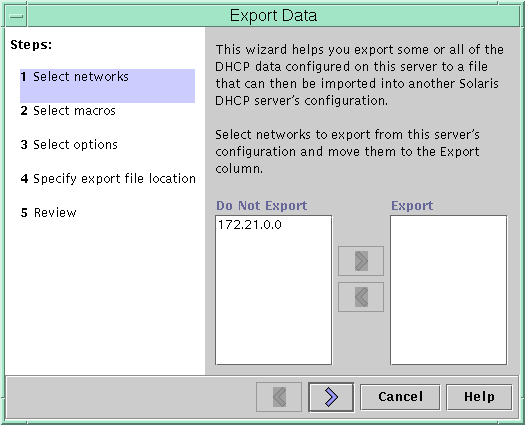
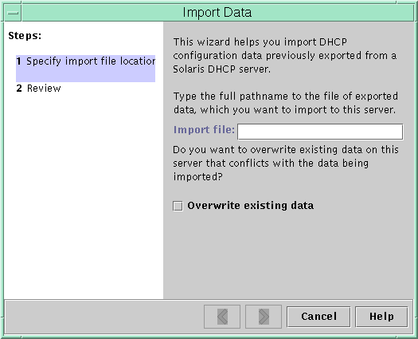

Document Information
Preface
Part I TCP/IP Administration
1. Solaris TCPIP Protocol Suite (Overview)
2. Planning an IPv4 Addressing Scheme (Tasks
3. Planning an IPv6 Addressing Scheme (Overview)
4. Planning an IPv6 Network (Tasks)
5. Configuring TCP/IP Network Services and IPv4 Addressing (Tasks)
6. Administering Network Interfaces (Tasks)
7. Enabling IPv6 on a Network (Tasks)
8. Administering a TCP/IP Network (Tasks)
9. Troubleshooting Network Problems (Tasks)
10. TCP/IP and IPv4 in Depth (Reference)
11. IPv6 in Depth (Reference)
Part II DHCP
12. About Solaris DHCP (Overview)
13. Planning for DHCP Service (Tasks)
14. Configuring the DHCP Service (Tasks)
15. Administering DHCP (Tasks)
About DHCP Manager
How to Start and Stop DHCP Manager
Setting Up User Access to DHCP Commands
How to Grant Users Access to DHCP Commands
Starting and Stopping the DHCP Service
How to Start and Stop the DHCP Service (DHCP Manager)
How to Enable and Disable the DHCP Service (DHCP Manager)
How to Enable and Disable the DHCP Service (dhcpconfig -S)
DHCP Service and the Service Management Facility
Modifying DHCP Service Options (Task Map)
How to Generate Verbose DHCP Log Messages (DHCP Manager)
How to Generate Verbose DHCP Log Messages (Command Line)
How to Enable and Disable DHCP Transaction Logging (DHCP Manager)
How to Enable and Disable DHCP Transaction Logging (Command Line)
How to Log DHCP Transactions to a Separate syslog File
How to Enable Dynamic DNS Updating for DHCP Clients
How to Customize DHCP Performance Options (DHCP Manager)
How to Customize DHCP Performance Options (Command Line)
Adding, Modifying, and Removing DHCP Networks (Task Map)
How to Specify Network Interfaces for DHCP Monitoring (DHCP Manager)
How to Specify Network Interfaces for DHCP Monitoring (dhcpconfig)
How to Add a DHCP Network (DHCP Manager)
How to Add a DHCP Network (dhcpconfig)
How to Modify the Configuration of a DHCP Network (DHCP Manager)
How to Modify the Configuration of a DHCP Network (dhtadm)
How to Remove a DHCP Network (DHCP Manager)
How to Remove a DHCP Network (pntadm)
Supporting BOOTP Clients With the DHCP Service (Task Map)
How to Set Up Support of Any BOOTP Client (DHCP Manager)
How to Set Up Support of Registered BOOTP Clients (DHCP Manager)
Working With IP Addresses in the DHCP Service (Task Map)
How to Add a Single IP Address (DHCP Manager)
How to Duplicate an Existing IP Address (DHCP Manager)
How to Add Multiple IP Addresses (DHCP Manager)
How to Add IP Addresses (pntadm)
How to Modify IP Address Properties (DHCP Manager)
How to Modify IP Address Properties (pntadm)
How to Mark IP Addresses as Unusable (DHCP Manager)
How to Mark IP Addresses as Unusable (pntadm)
How to Delete IP Addresses From DHCP Service (DHCP Manager)
How to Delete IP Addresses From the DHCP Service (pntadm)
How to Assign a Consistent IP Address to a DHCP Client (DHCP Manager)
How to Assign a Consistent IP Address to a DHCP Client (pntadm)
Working With DHCP Macros (Task Map)
How to View Macros Defined on a DHCP Server (DHCP Manager)
How to View Macros Defined on a DHCP Server (dhtadm)
How to Change Values for Options in a DHCP Macro (DHCP Manager)
How to Change Values for Options in a DHCP Macro (dhtadm)
How to Add Options to a DHCP Macro (DHCP Manager)
How to Add Options to a DHCP Macro (dhtadm)
How to Delete Options From a DHCP Macro (DHCP Manager)
How to Delete Options From a DHCP Macro (dhtadm)
How to Create a DHCP Macro (DHCP Manager)
How to Create a DHCP Macro (dhtadm)
How to Delete a DHCP Macro (DHCP Manager)
How to Delete a DHCP Macro (dhtadm)
Working With DHCP Options (Task Map)
How to Create DHCP Options (DHCP Manager)
How to Create DHCP Options (dhtadm)
How to Modify DHCP Option Properties (DHCP Manager)
How to Modify DHCP Option Properties (dhtadm)
How to Delete DHCP Options (DHCP Manager)
How to Delete DHCP Options (dhtadm)
Supporting Solaris Network Installation With the DHCP Service
Supporting Remote Boot and Diskless Boot Clients (Task Map)
Setting Up DHCP Clients to Receive Information Only (Task Map)
Converting to a New DHCP Data Store
How to Convert the DHCP Data Store (DHCP Manager)
How to Convert the DHCP Data Store (dhcpconfig -C)
16. Configuring and Administering DHCP Clients
17. Troubleshooting DHCP (Reference)
18. DHCP Commands and Files (Reference)
Part III IP Security
19. IP Security Architecture (Overview)
20. Configuring IPsec (Tasks)
21. IP Security Architecture (Reference)
22. Internet Key Exchange (Overview)
23. Configuring IKE (Tasks)
24. Internet Key Exchange (Reference)
25. Solaris IP Filter (Overview)
26. Solaris IP Filter (Tasks)
Part IV Mobile IP
27. Mobile IP (Overview)
28. Administering Mobile IP (Tasks)
29. Mobile IP Files and Commands (Reference)
Part V IPMP
30. Introducing IPMP (Overview)
31. Administering IPMP (Tasks)
Part VI IP Quality of Service (IPQoS)
32. Introducing IPQoS (Overview)
33. Planning for an IPQoS-Enabled Network (Tasks)
34. Creating the IPQoS Configuration File (Tasks)
35. Starting and Maintaining IPQoS (Tasks)
36. Using Flow Accounting and Statistics Gathering (Tasks)
37. IPQoS in Detail (Reference)
Glossary
Index
|
Moving Configuration Data Between DHCP Servers (Task Map)
DHCP Manager and the dhcpconfig utility enable you to move some or all
the DHCP configuration data from one Solaris DHCP server to another server. You
can move entire networks and all the IP addresses, macros, and options associated
with the networks. Alternatively, you can select specific IP addresses, macros, and options
to move. You can also copy macros and options without removing the macros
and options from the first server. You might want to move data if you are going to do
any of the following tasks:
Add a server to share DHCP duties. Replace the DHCP server's system. Change the path for the data store, while still using the same data store.
The following task map identifies the procedures that you must perform when you
move DHCP configuration data. In DHCP Manager, you use the Export Data wizard and the Import
Data wizard to move the data from one server to the other server.
You then modify macros in the Macros tab. The following figures show the
initial dialog boxes for the wizards. Figure 15-20 Export Data Wizard Dialog Box in DHCP Manager Figure 15-21 Import Data Wizard Dialog Box in DHCP Manager
How to Export Data From a DHCP Server (DHCP Manager)
- Start DHCP Manager on the server from which you want to move or
copy data.
See How to Start and Stop DHCP Manager for information about DHCP Manager.
- Choose Export Data from the Service menu.
The Export Data wizard opens as shown in Figure 15-20.
- Answer the wizard's prompts.
If you have difficulty, click Help for detailed information about the prompts.
- Move the export file to a file system that is accessible to the
DHCP server that must import the data.
See AlsoImport the data as described in How to Import Data on a DHCP Server (DHCP Manager).
How to Export Data From a DHCP Server (dhcpconfig -X)
- Log in to the server from which you want to move or copy
data.
- Become superuser or assume a role or user name that is assigned to
the DHCP Management profile.
For more information about the DHCP Management profile, see Setting Up User Access to DHCP Commands. Roles contain authorizations and privileged commands. For more information about roles, see Configuring RBAC (Task Map) in System Administration Guide: Security Services.
- Export the data.
You can export all of the DHCP data, or specific parts of the
data.
- To export specific addresses, macros, and options, type a command that uses the
following format:
# dhcpconfig -X filename -a network-addresses -m macros -o options filename is the full path name that you want to use to store
the compressed exported data. You specify particular network addresses, DHCP macros, and DHCP
options in comma-separated lists. The following example shows how to export specific networks,
macros, and options. # dhcpconfig -X /var/dhcp/0dhcp1065_data \ -a 10.63.0.0,10.62.0.0 \ -m 10.63.0.0,10.62.0.0,SUNW.Sun-Blade-100 -o Sterm
- To export all DHCP data, type a command that uses the ALL
keyword.
# dhcpconfig -X filename -a ALL -m ALL -o ALL filename is the full path name that you want to use to store
the compressed exported data. The keyword ALL can be used with the command
options to export all the network addresses, macros, or options. The following example
shows how to use the ALL keyword. # dhcpconfig -X /var/dhcp/dhcp1065_data -a ALL -m ALL -o ALL
Tip - You can omit the export of a particular kind of data by
not specifying the dhcpconfig command option for that type of data. For example, if
you do not specify the -m option, no DHCP macros are exported.
See the dhcpconfig(1M) man page for more information about the dhcpconfig command.
- Move the export file to a location that is accessible to the server
that must import the data.
See AlsoImport the data as described in How to Import Data on a DHCP Server (dhcpconfig -I).
How to Import Data on a DHCP Server (DHCP Manager)
- Start DHCP Manager on the server to which you want to move data
that you previously exported from a DHCP server.
See How to Start and Stop DHCP Manager for information about DHCP Manager.
- Choose Import Data from the Service menu.
The Import Data wizard opens, as shown in Figure 15-21.
- Answer the wizard's prompts.
If you have difficulty, click Help for detailed information about the prompts.
- Modify the imported data, if necessary.
See How to Modify Imported DHCP Data (DHCP Manager)
How to Import Data on a DHCP Server (dhcpconfig -I)
- Log in to the server to which you want to import the data.
- Become superuser or assume a role or user name that is assigned to
the DHCP Management profile.
For more information about the DHCP Management profile, see Setting Up User Access to DHCP Commands. Roles contain authorizations and privileged commands. For more information about roles, see Configuring RBAC (Task Map) in System Administration Guide: Security Services.
- Import the data by typing a command of the following format:
# dhcpconfig -I filename filename is the name of the file that contains the exported data.
- Modify the imported data, if necessary.
See How to Modify Imported DHCP Data (pntadm, dhtadm).
How to Modify Imported DHCP Data (DHCP Manager)
- Start DHCP Manager on the server to which you imported data.
See How to Start and Stop DHCP Manager for information about DHCP Manager.
- Examine imported data for network-specific information that needs modification.
For example, if you moved networks, you must open the Addresses tab and
change the owning server of addresses in the imported networks. You might also
need to open the Macros tab to specify the correct domain names for
NIS, NIS+ or DNS in some macros.
- Open the Addresses, tab and select a network that you imported.
- To select all the addresses, click the first address, press and hold the
Shift key, and click the last address.
- From the Edit menu, choose Properties.
The Modify Multiple Addresses dialog box opens.
- At the Managing Server prompt, select the new server's name.
- At the Configuration Macro prompt, select the macro that should be used for
all clients on this network, and then click OK.
- Open the Macros tab.
- Use the Find button to locate the options that are likely to need
modified values.
The Find button is located at the bottom of the window. DNSdmain, DNSserv, NISservs, NIS+serv, and NISdmain are examples of options that might
need modification on the new server.
- Change the options in the appropriate macros.
See How to Modify DHCP Option Properties (DHCP Manager) for the procedure for changing options.
How to Modify Imported DHCP Data (pntadm, dhtadm)
- Log in to the server to which you imported data.
- Become superuser or assume a role or user name that is assigned to
the DHCP Management profile.
For more information about the DHCP Management profile, see Setting Up User Access to DHCP Commands. Roles contain authorizations and privileged commands. For more information about roles, see Configuring RBAC (Task Map) in System Administration Guide: Security Services.
- Examine the network tables for data that needs to be modified.
If you moved networks, use the pntadm -P network-address command to print out the
network tables for the networks you moved.
- Modify IP address information by using the pntadm command.
You might need to change the owning server and the configuration macro for
imported addresses. For example, to change the owning server (10.60.3.4) and macro (dhcpsrv-1060) for
address 10.63.0.2, you would use the following command: pntadm -M 10.63.0.2 -s 10.60.3.4 -m dhcpsrv-1060 10.60.0.0 If you have a large number of addresses, you should create a script
file that contains commands to modify each address. Execute the script with the
pntadm -B command, which runs pntadm in batch mode. See the pntadm(1M) man page.
- Examine the dhcptab macros for options with values that need modification.
Use the dhtadm -P command to print the entire dhcptab table to your screen.
Use grep or some other tool to search for options or values that
you might want to change.
- Modify options in macros, if necessary, by using the dhtadm -M command.
For example, you might need to modify some macros to specify the correct
domain names and servers for NIS, NIS+ or DNS. For example, the following
command changes the values of DNSdmain and DNSserv in the macro mymacro: dhtadm -M -m mymacro -e 'DNSserv=dnssrv2:DNSdmain=example.net' -g
|